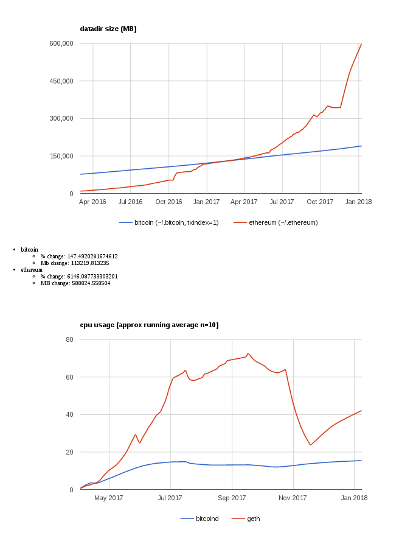
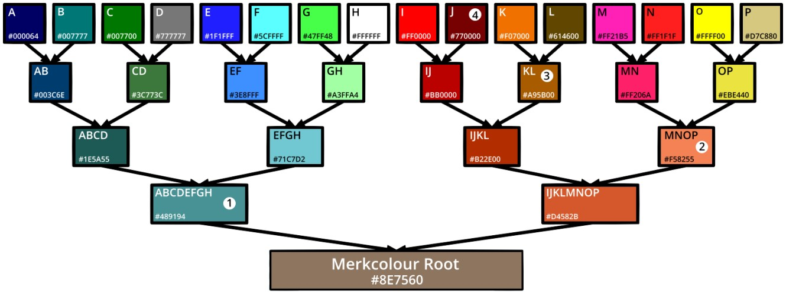
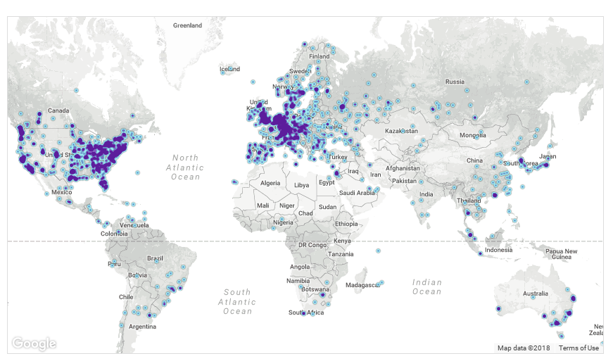
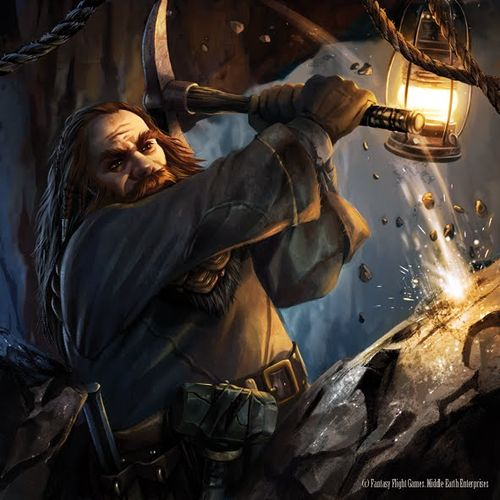
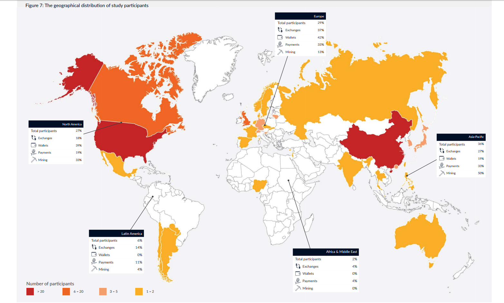
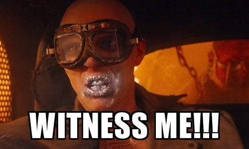
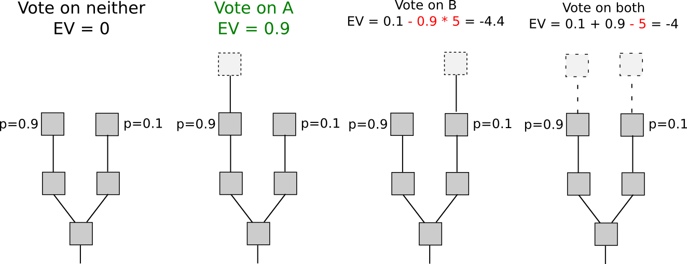

class: center, middle background-image: url(images/) title: Des chaînes et des transactions # Des chaînes et des transactions ## Défendre un outil commun ### 8 janvier 2018 --- # Adrien Bensaïbi * Twitter @olinkloo * Opérateur de noeuds Ethereum depuis 30 juillet 2015 * DevOps / Développeur * Rust / Programmation fonctionnelle * Fondateur de [ADAPP](https://www.adapp.tech) --- # Bitcoin <img src="images/Bitcoin_logo.svg" alt="adapp" height="150"/> * Cyber-monnaie * Protocol * Base de donnée en production (1) --- # Un consensus * Consensus sur les règles * Consensus sur les états * Consensus entre les utilisateurs qu'il a une valeur The economics of Bitcoin Mining or Bitcoin in the Presence of advesaries (2014) --- # Blockchaine ## Une base de donnée publique * Publique * Protégée * Décentralisée =/= Distribuée * Pseudonyme * Immuable * Montée en charge ??? --- # Technique, base de donnée * Hautement disponible - Réplicats / SPV (Simpligied Payment Verification) --- # Haute disponibilité * Bitcoin - block 50318 - 175Go * Ethereum - parity 48Go mode fast (state diff) - 600Go+  --- # CDC, base de donnée * Hautement disponible - Réplicats / SPV (Simpligied Payment Verification) * Garantie de la consistence des données - Merkel tree --- # Hashage * preimage => "Hello LilleFP" * fonction de Hashage => "sha256" * sha256( "hello LilleFP" ) => 87fc77aad7d16726fa460b756cd568a26e98d1d2885717a4c479cd232e907855 --- # Hashage * preimage => "Hello bitcoin talks lille" * fonction de Hashage => "sha256" * sha256( "hello bitcoin talks lille" ) => 0f8e59627f37328f54e77c3cc2dbe0cd4e145b4b9a5811e889f7ce96cec37d95 --- # Merkle tree  --- # Synchroniser --- # Cahier des Charges, Base de donnée * Hautement disponible - Réplicats / SPV (Simpligied Payment Verification) * Garantie la consistence des données - Merkel tree * Décentralisé "A protocol is decentralized only if it can fully recover from the permanent removal of all but one of its nodes" - Matthew Wampler Doty --- # Nodes  --- # Cahier des Charges, Base de donnée * Hautement disponible - Réplicats / SPV (Simpligied Payment Verification) * Garantie la consistence des données - Merkel tree * Décentralisé "A protocol is decentralized only if it can fully recover from the permanent removal of all but one of its nodes" - Matthew Wampler Doty * S'accord sur la même donnée - algorithme de consensus --- # Election d'un leader --- # Basée sur un mécanisme de consensus * Proof of Authority aka Round Robin * Algo psync => paxos, raft, vr --- # Basée sur un mécanisme de consensus * Proof of Authority aka Round Robin * Algorithmes partiellement synchrones => paxos, raft, vr * Algorithmes synchrones => PoW, PoS, DPoS --- # Une bonne preuve * Facile à vérifier * Périodique * Chacun peut trouver la solution * Une preuve impossible à détruite * Que personne (physique ou moral) ne détient --- # CDC, Base de donnée * Hautement disponible - Réplicats / SPV(Simpligied Payment Verification) * Garantie de la consistence des données - Merkel tree * Décentralisé "A protocol is decentralized only if it can fully recover from the permanent removal of all but one of its nodes" - Matthew Wampler Doty * S'accord sur la même donnée - algorithme de consensus * Sécurisée - contre les attaques --- # Attaques basiques * Spam et sybil --- # Attaques basiques * Spam et sybil => frais ou identité --- # Attaques basiques * Spam et sybil => frais ou identité * DDos --- # Attaques basiques * Spam et sybil => frais ou identité * DDos => décentralisation --- # Attaques basiques * Spam et sybil => frais ou identité * DDos => décentralisation * Communication --- # Attaques basiques * Spam et sybil => frais ou identité * DDos => décentralisation * Communication => informer ? Asymmétrie de l'information --- # Proof of Work: le triptyque ### Consensus de Nakamoto * bruteforce sha256 --- # Mineurs Indépendants => Entreprises  --- # Développeurs * Regroupés pour faire des services d'entreprise * Attirés par les ICOs --- # Utilisateurs Geek Dev => Madame michou --- # Utilisateurs * 2008-2010 => Cypherpunk * 2010-2012 => Ruée vers l'or * 2012-2013 => Paris en ligne, Darkweb * 2014 => Gueule de bois * 2017 => ICOs et les Forks * 2018 => Chatons ? --- # Répartition  --- # Attaques élaborées * Bribing attack * BGP attack * Selfish mining * Attack eclipse --- # Problèmes * Automatisation de la production => Centralisation du minage * Consommation énergétique, si elle tend à croitre à par appât du gain --- # Naive Proof of Stake (Preuve d'enjeu): un diptyque ? * votes par "actionnaires" * règles programmées --- # Problèmes specifiques aux PoS * Short range attack * No vote * Accumulation (Peercoin) * Pre-mine * Long range attack * Bribing attack (pot de vin) --- # Problèmes specifiques aux PoS * Short range attack * No vote * Accumulation (Peercoin) * Pre-mine * Long range attack * Bribing attack (pot de vin) * Nothing at stake --- # Delegated Proof of Stake (Preuve d'enjeu avec délégués)  * Notion de témoin * long range attack => une transaction comme preuve de dépôt * stakeholders => bonded validators => validators --- # Slasher Slashing condition  --- # Slasher * Preuve de malveillance --- # Problèmes specifiques aux PoS * Short range attack * No vote * Accumulation (Peercoin) * Pre-mine * Long range attack * Bribing attack (corruption) * Nothing at stake * Cartel attack --- # Travailler sur les motivations --- # Casper * Protection contre les cartels * période d'irréversibilité: Epoch * 2 phases: Prepare, Commit --- # Les faux problèmes * Profiter d'une rente --- # Les faux problèmes * Profiter d'une rente => Moindre que le PoW --- # Les faux problèmes * Profiter d'une rente => Moindre que le PoW * Plus de coins bloqués que de coins en circulation --- # Implémentations * Tezos - Ocaml * Ethereum - Golang et Rust * Bitcoin & Monero & Dash - C * Rsk & Ardor - Java * Cardano - Haskell --- ## Scriptless vs Scriptfull <img src="images/scriptless.gif" alt="catcoder" height="400"/> * Smart contract --- # LOL * Des pays qui souhaitent investir dans le BTC * Des voleurs qui se font coincer --- # Références ## Consensus algorithm http://www.pmg.csail.mit.edu/papers/vr.pdf https://raft.github.io/raft.pdf ## Gouvernance http://www.thebitcoin.fr/wp-content/uploads/2014/01/The-Economics-of-Bitcoin-Mining-or-Bitcoin-in-the-Presence-of-Adversaries.pdf Petits problèmes de scalabilité entres amis | Laurent Salat (OXT) https://www.youtube.com/watch?v=DnPvDPDYFIA --- ## Attacks http://bitfury.com/content/5-white-papers-research/pos-vs-pow-1.0.2.pdf https://bitcoinmagazine.com/articles/selfish-mining-a-25-attack-against-the-bitcoin-network-1383578440/ https://eprint.iacr.org/2015/263.pdf ### Energie https://bitcoin.fr/ne-nions-pas-le-probleme-electrique-du-bitcoin/ http://www.scilogs.fr/complexites/lelectricite-crypto-monnaies/ ### Arbitrage electrique https://www.youtube.com/watch?v=2T0OUIW89II --- ### Naive PoS https://peercoin.net/assets/paper/peercoin-paper-fr.pdf https://nxtwiki.org/wiki/Whitepaper:Nxt http://blackcoin.co/blackcoin-pos-protocol-v2-whitepaper.pdf https://nubits.com/assets/nu-whitepaper-23_sept_2014-en.pdf http://bitfury.com/content/5-white-papers-research/pos-vs-pow-1.0.2.pdf https://www.ethereum-france.com/quest-ce-que-la-preuve-denjeu-proof-of-stake-faq-par-v-buterin-traduction-francaise/ ### Slasher https://blog.ethereum.org/2014/01/15/slasher-a-punitive-proof-of-stake-algorithm/ ### DPoS https://bitshares.org/technology/delegated-proof-of-stake-consensus/ http://bytemaster.github.io/bitshares/2015/01/04/Delegated-Proof-of-Stake-vs-Proof-of-Work/ --- ### Casper https://blog.ethereum.org/2015/08/01/introducing-casper-friendly-ghost/ https://blog.ethereum.org/2014/11/25/proof-stake-learned-love-weak-subjectivity/ https://blog.ethereum.org/2016/12/06/history-casper-chapter-1/ https://blog.ethereum.org/2016/12/07/history-casper-chapter-2/ https://medium.com/@Vlad_Zamfir/the-history-of-casper-chapter-3-70fefb1182fc https://medium.com/@Vlad_Zamfir/the-history-of-casper-chapter-4-3855638b5f0e https://medium.com/@Vlad_Zamfir/the-history-of-casper-chapter-5-8652959cef58 https://github.com/ethereum/research/blob/master/papers/CasperTFG/CasperTFG.pdf https://medium.com/@VitalikButerin/minimal-slashing-conditions-20f0b500fc6c https://github.com/ethereum/cbc-casper/wiki/CBC-Casper-FAQ https://github.com/ethereum/wiki/wiki/Proof-of-Stake-FAQ https://github.com/ethereum/research/blob/master/papers/censorship_rejection/censorship_rejection.pdf http://notes.eth.sg/MYEwhswJwMzAtADgCwEYBM9kAYBGJ4wBTETKdGZdXAVmRvUQDYg=?view --- No Question! ok thank you :-) # Communautées ### Slack lille fp [Lille FP - canal Blockchain](https://slackin-lillefp.herokuapp.com/) ### la plus large communautée FR sur les cybermonnaies. [CryptoFR](https://cryptofr.com/)